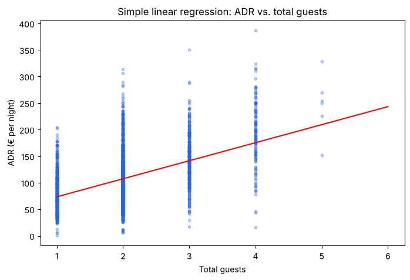
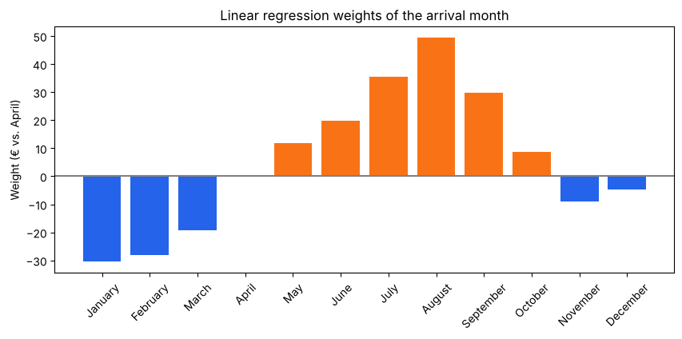
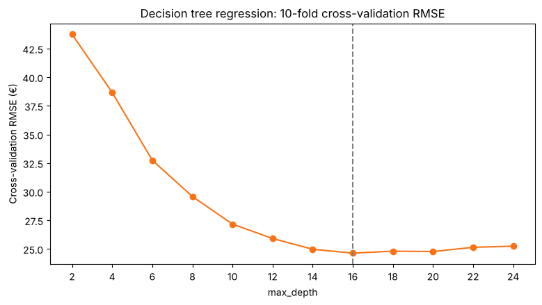
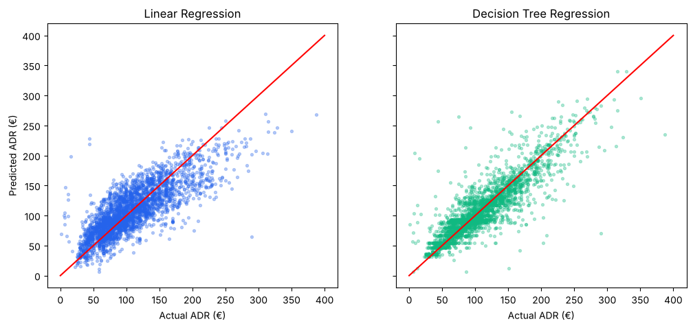

08 — Numeric Prediction: Predicting the Room Price (ADR)
Numeric prediction models continuous-valued functions: it predicts an unknown numeric target for new data.
Target: adr — Average Daily Rate (€ per night)
In this notebook:
- Simple linear regression (one feature)
- Multiple linear regression (all features)
- Regression performance: R², RMSE, MAE
- Cross-validation
- Decision tree regression and overfitting
import numpy as np import pandas as pd import matplotlib.pyplot as plt from pathlib import Path from sklearn.model_selection import train_test_split, KFold, cross_val_score from sklearn.linear_model import LinearRegression from sklearn.tree import DecisionTreeRegressor from sklearn.metrics import mean_squared_error, mean_absolute_error BLUE, CYAN, GREEN, ORANGE = "#2563eb", "#06b6d4", "#10b981", "#f97316" FIG_DIR = Path("../figures") df = pd.read_csv("../data/processed/hotel_bookings_final.csv") print(df.shape)
(86620, 41)
1. Prepare the Data
Bookings with adr = 0 are free (complementary) rooms; their price is not set by the market, so they are removed.
print("Bookings with adr = 0:", (df["adr"] == 0).sum()) reg_df = df[df["adr"] > 0].copy() print(reg_df.shape) reg_df["adr"].describe().round(1)
Bookings with adr = 0: 1038 (85582, 41)
count 85582.0 mean 108.5 std 50.2 min 0.3 25% 74.5 50% 99.0 75% 135.0 max 510.0 Name: adr, dtype: float64
2. Simple Linear Regression
With one input feature, linear regression uses a straight-line equation:
$$\hat{y} = b + wx$$
- $x$: input value · $\hat{y}$: predicted output
- $w$: slope — how much the prediction changes when the input increases by one unit
- $b$: intercept — the prediction when the input is zero
The feature used is total_guests, the numeric attribute most related to adr.
print(reg_df[["adr", "total_guests", "children", "adults", "lead_time", "total_nights"]].corr()["adr"].round(3))
adr 1.000 total_guests 0.472 children 0.358 adults 0.325 lead_time 0.006 total_nights 0.031 Name: adr, dtype: float64
# Create X from the total_guests column and y from the adr column X = reg_df["total_guests"].values.reshape(-1, 1) y = reg_df["adr"].values # Create and fit the model reg = LinearRegression() reg.fit(X, y) b, w = reg.intercept_, reg.coef_[0] print(f"b (intercept) = {b:.2f}") print(f"w (slope) = {w:.2f}") print(f"Prediction for 3 guests: {b:.2f} + {w:.2f} × 3 = {b + w * 3:.2f} €")
b (intercept) = 39.51 w (slope) = 33.95 Prediction for 3 guests: 39.51 + 33.95 × 3 = 141.37 €
sample = reg_df.sample(3000, random_state=42) x_line = np.arange(1, 7).reshape(-1, 1) plt.figure(figsize=(8, 5)) plt.scatter(sample["total_guests"], sample["adr"], color=BLUE, alpha=0.3, s=10) plt.plot(x_line, reg.predict(x_line), color="red") plt.xlabel("Total guests") plt.ylabel("ADR (€ per night)") plt.title("Simple linear regression: ADR vs. total guests") plt.savefig(FIG_DIR / "reg_01_simple_linear.png", dpi=150, bbox_inches="tight") plt.show() print("R²:", round(reg.score(X, y), 3))

R²: 0.223
3. Multiple Linear Regression
With several input features, the model learns a weight for each feature and combines their contributions.
During training, least squares chooses the weights that minimise the sum of squared differences between actual and predicted values:
$$L(w, b) = \sum_{i=1}^{n} (y_i - \hat{y}_i)^2$$
Only attributes known at booking time are used. arrival_date_year and arrival_date_month are treated as
categories, because price changes with the season, not in a straight line with the month number.
NUMERIC = ["lead_time", "total_nights", "adults", "children", "babies", "total_of_special_requests", "is_repeated_guest", "booking_changes"] CATEGORICAL = ["hotel", "arrival_date_year", "arrival_date_month", "meal", "market_segment", "distribution_channel", "reserved_room_type", "customer_type", "deposit_type"] # Convert categorical variables to numeric using one-hot encoding X = pd.get_dummies(reg_df[NUMERIC + CATEGORICAL], columns=CATEGORICAL, drop_first=True, dtype=int) y = reg_df["adr"] print(X.shape)
(85582, 49)
X_train, X_test, y_train, y_test = train_test_split(X, y, test_size=0.2, random_state=42) # Instantiate and fit the model lr_model = LinearRegression() lr_model.fit(X_train, y_train) # Make predictions y_pred_lr = lr_model.predict(X_test) print("Predictions:", y_pred_lr[:5].round(1)) print("Actual: ", y_test.values[:5])
Predictions: [143.6 162.4 200.3 89.4 83.1] Actual: [129. 221. 207.9 93.6 90.9]
3.1 Regression Performance
- R²: how much of the variance in
adrthe features explain (1 = perfect) - RMSE: root mean squared error, in € per night
- MAE: mean absolute error, in € per night
r2_lr = lr_model.score(X_test, y_test) rmse_lr = np.sqrt(mean_squared_error(y_test, y_pred_lr)) mae_lr = mean_absolute_error(y_test, y_pred_lr) print("R²: ", round(r2_lr, 4)) print("RMSE:", round(rmse_lr, 2)) print("MAE: ", round(mae_lr, 2))
R²: 0.6386 RMSE: 30.19 MAE: 22.31
3.2 Cross-validation for R²
10-fold cross-validation on the training set: each fold is used once for testing and the others for training.
kf = KFold(n_splits=10, shuffle=True, random_state=42) cv_scores = cross_val_score(LinearRegression(), X_train, y_train, cv=kf) print(cv_scores.round(4)) print("Mean:", round(np.mean(cv_scores), 4)) print("Standard deviation:", round(np.std(cv_scores), 4)) print("95% interval:", np.quantile(cv_scores, [0.025, 0.975]).round(4))
[0.6506 0.6323 0.6369 0.6517 0.6488 0.6406 0.667 0.6448 0.6448 0.6343] Mean: 0.6452 Standard deviation: 0.0097 95% interval: [0.6327 0.6636]
3.3 Weights of the Months
Each weight shows how much the predicted price changes compared with the baseline month (April), when all other features stay the same.
months = ["January", "February", "March", "April", "May", "June", "July", "August", "September", "October", "November", "December"] weights = pd.Series(lr_model.coef_, index=X.columns) month_w = pd.Series({m: weights.get(f"arrival_date_month_{m}", 0.0) for m in months}) plt.figure(figsize=(10, 4)) plt.bar(month_w.index, month_w.values, color=[ORANGE if v > 0 else BLUE for v in month_w.values]) plt.axhline(0, color="grey") plt.ylabel("Weight (€ vs. April)") plt.title("Linear regression weights of the arrival month") plt.xticks(rotation=45) plt.savefig(FIG_DIR / "reg_02_month_weights.png", dpi=150, bbox_inches="tight") plt.show() month_w.round(1)

January -30.5 February -28.1 March -19.3 April 0.0 May 11.8 June 19.7 July 35.6 August 49.3 September 29.7 October 8.8 November -8.9 December -4.8 dtype: float64
4. Decision Tree Regression
A regression tree splits the data like a classification tree, but each leaf predicts the average adr
of its training records.
4.1 A tree without limits: training vs. test error (RMSE)
- Underfitting: high error on both training and test sets
- Overfitting: low training error, high test error
tree_full = DecisionTreeRegressor(random_state=42) tree_full.fit(X_train, y_train) print("Depth:", tree_full.get_depth()) print("Training RMSE:", round(np.sqrt(mean_squared_error(y_train, tree_full.predict(X_train))), 2)) print("Test RMSE: ", round(np.sqrt(mean_squared_error(y_test, tree_full.predict(X_test))), 2))
Depth: 50 Training RMSE: 4.11 Test RMSE: 26.14
4.2 Choosing the depth with cross-validation
cv_rmse_depths = {} for depth in range(2, 25, 2): model = DecisionTreeRegressor(max_depth=depth, random_state=42) scores = cross_val_score(model, X_train, y_train, cv=kf, scoring="neg_mean_squared_error") cv_rmse_depths[depth] = round(float(np.sqrt(-scores.mean())), 2) best_depth = min(cv_rmse_depths, key=cv_rmse_depths.get) print(cv_rmse_depths) print("Best depth:", best_depth)
{2: 43.75, 4: 38.67, 6: 32.75, 8: 29.58, 10: 27.17, 12: 25.91, 14: 24.97, 16: 24.63, 18: 24.8, 20: 24.77, 22: 25.14, 24: 25.24}
Best depth: 16
plt.figure(figsize=(9, 4.5)) plt.plot(list(cv_rmse_depths.keys()), list(cv_rmse_depths.values()), marker="o", color=ORANGE) plt.axvline(best_depth, color="grey", ls="--") plt.xlabel("max_depth") plt.ylabel("Cross-validation RMSE (€)") plt.title("Decision tree regression: 10-fold cross-validation RMSE") plt.xticks(list(cv_rmse_depths.keys())) plt.savefig(FIG_DIR / "reg_03_tree_depth.png", dpi=150, bbox_inches="tight") plt.show()

4.3 Final Decision Tree Regressor
dtr_model = DecisionTreeRegressor(max_depth=best_depth, random_state=42) dtr_model.fit(X_train, y_train) y_pred_dtr = dtr_model.predict(X_test) r2_dtr = dtr_model.score(X_test, y_test) rmse_dtr = np.sqrt(mean_squared_error(y_test, y_pred_dtr)) mae_dtr = mean_absolute_error(y_test, y_pred_dtr) print("Training RMSE:", round(np.sqrt(mean_squared_error(y_train, dtr_model.predict(X_train))), 2)) print("Test RMSE: ", round(rmse_dtr, 2))
Training RMSE: 17.37 Test RMSE: 24.93
5. Comparing the Two Models
comparison = pd.DataFrame({"Linear Regression": [r2_lr, rmse_lr, mae_lr], "Decision Tree Regression": [r2_dtr, rmse_dtr, mae_dtr]}, index=["R²", "RMSE (€)", "MAE (€)"]) comparison.round(3)
| Linear Regression | Decision Tree Regression | |
|---|---|---|
| R² | 0.639 | 0.754 |
| RMSE (€) | 30.185 | 24.928 |
| MAE (€) | 22.308 | 15.830 |
fig, axes = plt.subplots(1, 2, figsize=(12, 5), sharey=True) for ax, pred, name, color in [(axes[0], y_pred_lr, "Linear Regression", BLUE), (axes[1], y_pred_dtr, "Decision Tree Regression", GREEN)]: ax.scatter(y_test[:3000], pred[:3000], s=8, alpha=0.3, color=color) ax.plot([0, 400], [0, 400], color="red") ax.set_title(name) ax.set_xlabel("Actual ADR (€)") axes[0].set_ylabel("Predicted ADR (€)") plt.savefig(FIG_DIR / "reg_04_actual_vs_predicted.png", dpi=150, bbox_inches="tight") plt.show()

6. Summary
Question: How much of the room price (ADR) can be predicted from attributes known at booking time?
| Linear Regression | Decision Tree Regression | |
|---|---|---|
| Setting | all 49 features | max_depth = 16 (10-fold cross-validation) |
| R² | 0.639 | 0.754 |
| RMSE | €30.2 | €24.9 |
| MAE | €22.3 | €15.8 |
Findings
- With one feature,
total_guestsexplains 22% of the variance (ŷ = 39.5 + 34.0 × guests): each extra guest adds about €34 per night. - Multiple linear regression explains 64% of the variance; 10-fold cross-validation gives the same result (0.645 ± 0.010), so the model is stable.
- Seasonality: compared with April, August is about +€49 per night and January about −€31, with all other features held the same.
- A decision tree without limits overfits (training RMSE €4.1, test RMSE €26.1). With max_depth = 16 it explains 75.4% of the variance — better than linear regression, because price does not change in a straight line with the attributes.
Limitation: about a quarter of the variance remains unexplained; the exact room, daily demand and promotions are not in the data.